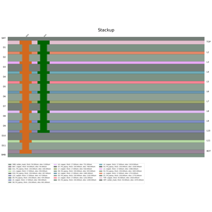

EDB examples#
These examples use EDB (Electronics Database) with PyAEDT. EDB is a powerful API that allows to control PCB data efficently. You can either use EDB standalone or embedded in HFSS 3D Layout in AEDT.


EDB: IPC2581 export
EDB: 5G linear array antenna

EDB: plot nets with Matplotlib
EDB: plot nets with Matplotlib

EDB: parametric via creation


EDB: Edit Control File and import gds
EDB: Edit Control File and import gds
EDB: post-layout parameterization
EDB: post-layout parameterization